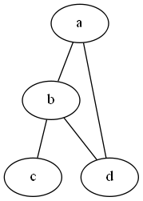

Graphviz 基本操作
y
graph - Simple Graph
- 簡單的圖例
graph graphname { a -- b; b -- c; b -- d; d -- a; }

rankdir - Rank Direction
- 從左至右的構圖
graph graphname { rankdir=LR; //Rank Direction Left to Right a -- b; b -- c; b -- d; d -- a; }
digraph - Digraph
- 簡單的有向圖
digraph graphname{ a -> b; b -> c; a -> c; }
Label 的使用
digraph graphname{ T [label="Teacher"] // node T P [label="Pupil"] // node P T->P [label="Instructions", fontcolor=darkgreen] // edge T->P }
形狀與顏色
digraph graphname { T [label="Teacher" color=Blue, fontcolor=Red, fontsize=24, shape=box] // node T P [label="Pupil" color=Blue, fontcolor=Red, fontsize=24, shape=box] // node P T->P [label="Instructions", fontcolor=darkgreen] // edge T->P }

筆記可能還會不定期增加，下方若有 TODO 的參考資料可先行閱讀
參考資料
- 1. 使用DOT语言和Graphviz绘图(翻译) - Casa Taloyum
- TODO 2. 绘图工具graphviz学习使用 | lijian
- TODO 3. 使用 Graphviz 生成自动化系统图
- TODO 4. DOT + graphviz 轻松画图神器 - stormdpzh的专栏 - 博客频道 - CSDN.NET
- TODO 5. 使用graphviz绘制流程图 - I code it
- TODO 6. 开源项目：【自动】绘图工具 Graphviz——《太子党关系网络》就是用它制作
- TODO 7. 绘图神器 —— Graphviz dot 语言介绍
- TODO 8. Graphviz简介 - Coin163
- TODO 9. 利用Graphviz 画结构图 - sld666666 - 博客园
- TODO 10. graphviz dot简介 - 爱程序网
- TODO 11. DOT + graphviz 轻松画图
右下角的 OPEN CHAT 可以即時討論，歡迎留言給予建議與指教，也可以與我打個招呼